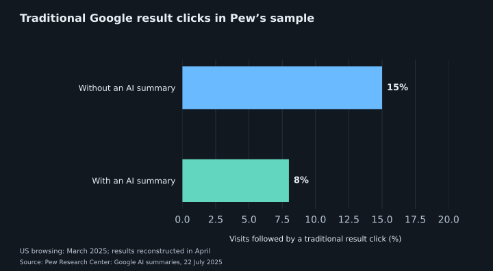

When a customer asks an AI system which company to choose, your website may become a source in someone else's answer before it becomes a destination. The customer might compare providers in a search summary, open a review, inspect a product page, and only then visit your contact form. That changing journey raises a useful question: can people and search systems understand what your business actually offers?
AI search optimization starts with the same foundations that make a website useful to a human reader: accessible information, clear services, specific evidence, and reliable technical delivery. The challenge is to improve those foundations while measuring a journey that may include fewer direct visits from some searches.
This guide explains what the available research establishes, how Google describes eligibility for its AI features, and how to build an evidence-led SEO and content plan. Practical recommendations throughout are my analysis. No technique in this guide guarantees a ranking, an AI citation, or a sales result.
What the click research actually measured
In a July 2025 analysis, Pew Research Center examined browsing data from 900 US adults. It found traditional search-result clicks on 8% of visits with an AI summary, compared with 15% without one. Clicks on a source inside the summary occurred on 1% of visits with a summary.

| Group or target | Value |
|---|---|
| Without an AI summary | 15% |
| With an AI summary | 8% |
The dataset covered March 2025 browsing and 68,879 unique Google searches. Pew reconstructed search results through a third-party service on 7–17 April. Results can change between observation and reconstruction. The comparison is observational, concerns this sample and period, and does not establish that an AI summary caused a particular company's traffic or revenue change.
For a business, the appropriate response is measurement and adaptation. Look at which queries lead to useful visits, which pages support decisions, and which channels eventually produce inquiries. A historical click comparison explains a market concern; it cannot substitute for your site's own evidence.
Separate AI summaries from every other discovery channel
Google AI Overviews, conversational search products, social recommendations, directories, and ordinary search results differ in how they retrieve and display information. Avoid treating every referral from an AI-related domain as the same phenomenon, or assuming that one provider's documentation explains all the others.
Map the discovery paths that matter to your business. A local service company may depend on location searches and recommendations. A software vendor may receive comparison queries, documentation searches, and branded demand. A retailer may need product availability, delivery details, and trustworthy category pages.
This map helps determine which pages deserve investment. A broad educational article may support early research, while a service page answers the commercial question. A case study can provide evidence for a shortlist. A contact page should help someone continue when they are ready to talk.
Use established SEO terms where they help the team: search intent, technical SEO, internal linking, structured data, impressions, clicks, and conversions. New labels such as generative engine optimization can describe an area of interest, but they should lead to observable work. A new acronym does not create a separate route around clear information and dependable delivery.
Google's AI features still rely on search fundamentals
Google's documentation for AI features says that existing SEO best practices remain relevant and that no additional technical requirements or special optimization are necessary for eligibility. A page needs to be indexed and eligible to appear with a snippet. Eligibility does not guarantee inclusion.
That guidance changes the starting point of an AI visibility project. Before commissioning a new format, check whether the important pages can be crawled, render useful content, and communicate their purpose. Then improve the substance that could help answer a relevant question.
Inspect a representative sample rather than only the homepage. Product templates, service pages, articles, and location pages may use different rendering or indexing settings. A mistake shared across a template can affect many URLs while a quick homepage review still looks healthy.
Also keep your objectives clear. The business needs qualified discovery and useful customer actions. A mention inside an answer can be valuable, but it is one signal among several. Avoid replacing every existing measure with a single AI visibility score whose sampling and calculation the team cannot explain.
Build service pages that answer a buying question
A service page should help a prospective customer understand the problem you address, who the service fits, what the engagement includes, and how to take the next step. Broad claims about innovation or excellence leave both the reader and the researcher searching for specifics.
Start with the actual task. For a client portal project, describe the users, documents, review steps, and integration needs that commonly shape the work. Explain what you would examine during discovery and what a first release might include. Mark examples as examples rather than presenting them as standard promises.
Address constraints that influence a decision. These may include existing tools, account ownership, hosting needs, accessibility, data migration, and ongoing support. You do not need to publish a fixed price for every possible project to explain how the scope affects cost.
Give the page a focused next action. A useful inquiry prompt asks for the current process, the people involved, and the outcome the company wants. This produces a stronger initial conversation than a generic invitation to contact an expert. My business application services provide one route for discussing those requirements.
Make claims traceable through evidence
Evidence can take several forms: a live product, a project description, a documented implementation, a named qualification, or an authorized client statement. The important point is that the evidence supports the particular claim. A screenshot can demonstrate an interface; it cannot by itself prove a revenue increase.
For each case study, describe the starting problem, your contribution, the delivered behavior, and any limits on what you can disclose. If you have measured results, state the period, baseline, method, and relevant context. If you do not, explain the functional outcome without inventing a performance figure.
Use consistent names for the business, people, services, and projects. Keep contact details and official profiles aligned. This helps readers verify that they have found the right organization and reduces ambiguity when information appears across directories and social platforms.
Review older claims as the business changes. A product that has moved, a service you no longer offer, or a broken demo can undermine an otherwise well-written page. Evidence has an operating cost: someone needs to maintain the links and confirm that the story still accurately describes what visitors can inspect.
Write comprehensive content around a useful question
Google's people-first content guidance encourages content that helps its intended audience and provides a satisfying answer. Use that principle to choose scope. Length should follow the information needed to explain the subject, demonstrate the reasoning, and support a decision.
A strong technical business article can move from definition to evidence, then to implementation choices, examples, and next steps. Each section should add something. Repeating a target keyword or restating the introduction does not make a long guide more informative.
Create a research record before drafting. Separate primary documentation, original research, vendor announcements, and your own analysis. Record the publication date and the precise claim each source supports. That makes it easier to avoid presenting a commercial promise as an independently demonstrated result.
Use related terms where they fit the explanation. An article about AI search may naturally discuss organic traffic, search intent, structured data, and customer journeys. It does not need an awkward paragraph of every phrase a keyword tool suggested. The best keyword distribution follows a coherent treatment of the topic and the reader's vocabulary.
Structured data should describe visible reality
Google's structured data introduction explains how explicit machine-readable information can help it understand a page. Structured data should match the visible content and follow the requirements for the relevant feature. Correct markup does not guarantee a rich result.
For a blog, useful fields may describe the article, author, image, publication date, and canonical URL. For other page types, use only the types and properties that accurately represent the content. Do not label a service as a product merely because a template makes it convenient.
Check the rendered page and the structured data together. If the article title changes, update the metadata. If a featured image moves, update its absolute URL. If you publish an author profile, make sure the page gives a real reader meaningful information about that person.
Avoid adding fabricated reviews, unsupported awards, or hidden claims to markup. A machine-readable layer should clarify the page, not tell a more impressive story than visitors can verify. Include structured data validation in the publishing checklist so that useful metadata remains consistent as the site grows.
Internal links create a useful reading path
Internal linking helps visitors move from a question to a deeper explanation, a relevant example, and an appropriate service. Use links when the next page adds context. A guide about website performance can point to cloud operations when it reaches hosting decisions, then to a service page when the reader needs implementation help.
Choose descriptive anchor text. A link labeled cloud hosting and recovery gives more context than click here. Keep the sentence readable and avoid forcing several links into every paragraph. A focused path usually serves the reader better than a page crowded with unrelated destinations.
Create inbound links to new content from places people already visit. The blog index is one route; related articles and relevant service pages can provide others where the scope permits. Cross-linking related guides also helps a reader explore a broader technical decision without requiring one page to explain every adjacent subject.
For this series, the software selection guide, accessibility guide, and performance guide expand different parts of a website improvement plan. These connections have a clear editorial purpose rather than existing solely to increase a link count.
Diagnose technical SEO before rewriting everything
Inspect status codes, redirects, canonical URLs, indexing directives, crawl access, and the content delivered to the browser. A page can contain excellent writing while pointing its canonical URL somewhere unintended or returning an error. Resolve those issues before interpreting every visibility change as a content problem.
Google's robots.txt guidance distinguishes crawl control from preventing indexing. Blocking a URL in robots.txt does not reliably keep the URL out of search results. If a page must remain private, use appropriate access controls; if the goal concerns indexing, follow the relevant indexing guidance.
Check JavaScript-dependent templates carefully. Confirm that important content and links become available in the rendered page and that users can navigate them. A static page and a complex application may require different debugging, but both need a clear, accessible representation of their content.
Maintain a change log around major releases. If traffic changes after a redesign, compare the old and new URLs, titles, redirects, content, and technical settings. Multiple simultaneous changes make causation difficult to establish. A disciplined audit can identify a concrete defect instead of triggering a broad rewrite based on an untested theory.
Measure discovery and business outcomes separately
Search Console helps examine search impressions, clicks, queries, and landing pages. Analytics can help examine what happens after visitors arrive. Google explains why Search Console and Analytics figures differ: they measure different events and use different processing and definitions.
Build a reporting view that preserves those distinctions. Track search visibility, qualified visits, completed inquiries, and useful commercial outcomes as separate stages. A business may receive fewer visits while attracting better-qualified leads, or more visits that rarely become meaningful conversations.
Google's AI features documentation also explains that relevant traffic appears within Search Console's overall web search reporting. Do not claim a precise AI Overview attribution from a report that does not provide it. Where a platform exposes referral information, record its limitations and avoid extrapolating beyond the sample.
Add a simple question to your inquiry workflow when appropriate: how did the customer first hear about the business? Self-reported answers have limitations, but they can reveal paths that analytics misses. Use them alongside technical measurement. A credible report makes uncertainty visible instead of forcing every customer into a falsely precise attribution model.
Test content changes with a clear hypothesis
Choose a specific problem before changing a page. Perhaps visitors understand the service but cannot tell whether it fits their existing tools. Your hypothesis might be that a clearer integration section will improve the quality of inquiries. Define what evidence would support that hypothesis before publishing.
Keep a record of the changed URLs, dates, and content. Compare a suitable observation period while considering seasonality, campaigns, and other site changes. Small sites may not have enough traffic for confident statistical conclusions. Qualitative inquiry quality and user feedback can still help guide the next iteration.
Avoid attributing every movement to the latest edit. Search demand, competition, indexing, and ranking systems can change independently. A useful interpretation states what happened and what other explanations remain plausible. That approach supports better decisions than a claim that a single heading produced a guaranteed ranking increase.
Use focused tests where possible. Improve a service page's explanation, fix a broken internal path, or add evidence to an incomplete case study. These changes can serve visitors directly even while search outcomes take time to evaluate. SEO becomes an ongoing publishing and product discipline rather than a sequence of attempts to satisfy an opaque score.
A practical plan for a service business
Start by listing the services the company actually wants to sell and the questions prospects ask before buying. Match each important question to a page. Note gaps where the site offers only a broad statement or sends visitors to an unrelated personal profile.
Next, inspect the technical status of those pages. Confirm that they load, present consistent business information, and offer a useful next step. Review the inquiry process on mobile. A content investment loses value if the visitor cannot complete the contact form or understand who will respond.
Then build a small group of substantial resources around real buying and implementation decisions. Link them to relevant services and evidence. Publish references and dates for factual claims. Keep a review owner for time-sensitive material such as product capabilities, regulations, and pricing.
Finally, establish a reporting rhythm. Review search data, landing-page behavior, inquiries, and feedback together. Prioritize the next improvement according to the weakest useful stage. This suggested plan is a working sequence, not a forecast of how quickly a business will rank or receive an AI citation.
Build a source ledger for every substantial article
A source ledger connects each factual claim to a publication you can inspect. Record the source owner, URL, publication date, observation period, sample where relevant, and the exact point the article draws from it. This makes a long guide easier to review and maintain after publication.
Distinguish original research from commentary about that research. A news report may help locate a study, but the study's own methodology usually provides the information needed to interpret its numbers. Likewise, a vendor announcement can establish what the vendor announced, while independent evidence would be needed for a broader performance claim.
For charts, preserve the underlying values and their units. State whether a change is relative or measured in percentage points. Identify the denominator and explain when two bars describe different groups. A clean graphic can look authoritative even when a comparison is invalid; the ledger gives the editor a way to catch that problem.
Use the ledger to set review priorities. Technical documentation and product capabilities can change. A historical study remains useful when it stays clearly dated, while a sentence claiming current availability may need a fresh check. Avoid updating the visible publication date merely to make old material appear new.
This editorial practice supports credibility beyond SEO. A reader can follow the references, an engineer can inspect the technical basis, and the author can correct a claim without reconstructing the research from memory. It is a practical way to make comprehensive content more dependable.
Design the commercial ending around the reader's next decision
An educational article can also help a prospective customer understand your services. The strongest connection comes from the problem the article has just explained. A guide to software selection can invite the reader to share a workflow brief. A performance guide can invite them to identify the customer journey that fails.
Avoid attaching a broad sales pitch that ignores the topic. Explain the relevant work you can offer, link to an appropriate service or project, and state what information would make an initial conversation useful. This gives a serious reader a clear route forward without interrupting every section with an advertisement.
Keep claims about your own work as carefully supported as the research. If a portfolio demonstrates a working application, describe that application and your contribution. If a result has not been measured, do not invent a percentage to make the closing paragraph more persuasive. Specific deliverables can communicate competence without exaggerated outcomes.
Review the destination too. The service page should use consistent identity and contact information, and the inquiry route should work on mobile and with a keyboard. Sending an interested reader to a confusing or broken page wastes the value of a substantial article.
Measure the quality of the resulting conversations where practical. A reader who arrives with a clear process and constraint may be a stronger lead than a large number of casual visits. Content strategy becomes more useful when the business can connect education with an appropriate, honest offer.
Questions about AI search and SEO
Do I need a special file to appear in Google's AI features?
Google's documentation does not require a new AI-specific file or special schema for eligibility. Concentrate on indexed, useful pages and sound technical SEO. Other services may publish their own guidance, so inspect the provider relevant to the audience you want to reach.
Should I replace short pages with long articles?
Keep the format suited to the task. A contact page should be direct. A technical guide may need substantial depth. A service page needs enough information to support a buying decision. Word count alone cannot establish quality or search performance.
Can an agency guarantee AI recommendations?
An agency can commit to defined research, implementation, testing, and reporting work. It cannot control a search provider's answer for every user and query. Evaluate proposals by the work and evidence they provide, and keep outcome claims proportionate to what anyone can actually measure.
Help customers understand why you belong on the shortlist
Clear services, useful explanations, verifiable examples, and a reliable website give customers better material for their decisions. They also give discovery systems more coherent information to work with. That is a durable investment whether the next visitor arrives through a blue link, a recommendation, or an AI-generated answer.
I help businesses connect website structure, technical delivery, content, and useful customer journeys. You can explore my web development work, review portfolio projects, or describe the service and audience you want to reach. We can turn that brief into a focused website and content improvement plan with clear deliverables and measurements your team can understand.
Sources and research notes
Primary publications and official documentation consulted for this guide. Research periods are stated beside the relevant claims and charts. Implementation checklists and worked examples represent my analysis; fictional examples are not client results. Reviewed 22 November 2026.
- Pew Research Center: Google AI summaries, 22 July 2025
- Google Search Central: AI features and your website
- Google Search Central: Creating helpful, reliable, people-first content
- Google Search Central: Introduction to structured data
- Google: Using Search Console and Analytics together
- Google Search Central: Introduction to robots.txt